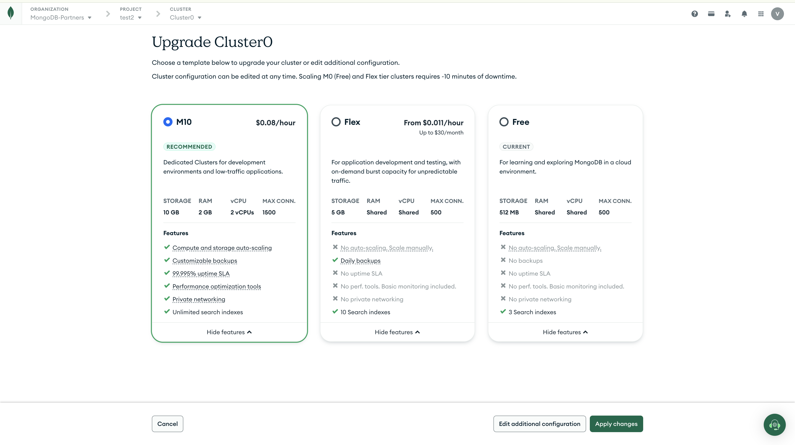

If your product provisions MongoDB Atlas for customers, every workload that serves real users or real business data belongs on a paid tier (M10+ dedicated, or Flex for lightweight dev/test). This guide shows what M0 blocks, why paid tiers belong in dev and stage too, and exactly how to get each customer there.
M0 is a sandbox: shared resources, hard caps, and no safety net. Paid tiers are the same database engine with the controls real applications need.
| Capability | M0 — Free | Flex | M10+ — Dedicated |
|---|---|---|---|
| Storage | 512 MB | 5 GB | 10 GB and up, with storage auto-scaling |
| Compute | Shared RAM & vCPU | Shared, burstable | Dedicated RAM & vCPUs — predictable performance |
| Max connections | 500 | 500 | 1,500+, scaling with tier |
| Auto-scaling | ✗ None | ✗ Manual only | ✓ Compute and storage auto-scaling |
| Backups | ✗ No backups | ✓ Daily backups | ✓ Customizable backups & restore options |
| Uptime SLA | ✗ None | ✗ None | ✓ Production uptime SLA |
| Performance tooling | Basic monitoring only | Basic monitoring only | ✓ Performance Advisor, profiler, real-time metrics |
| Private networking | ✗ | ✗ | ✓ VPC peering / private endpoints |
| Auditing & customer-managed keys | ✗ | ✗ | ✓ On eligible dedicated tiers |
| Search indexes | 3 | 10 | Unlimited — room for AI/vector workloads |
Specs as shown in the Atlas tier picker (see the upgrade screenshot below). Dedicated tiers scale well beyond M10 — storage, RAM, vCPUs, and connection limits all grow with tier size.
An M0 dev environment hides problems until production. Paid tiers in every environment let your customers use the full potential of MongoDB from day one — and promote to production without a migration.
Dedicated RAM/vCPUs and 1,500+ connections mean performance numbers that actually mean something. M0's shared compute and 500-connection ceiling throttle any serious test — so "fast enough on M0" proves nothing.
Practice restores in dev and stage before production depends on them. M0 has no backups at all — one bad migration or accidental delete and the data is gone.
Performance Advisor, the query profiler, and granular real-time metrics let your customers tune indexes and queries as they build — not as an emergency after launch.
Private networking, auditing, and customer-managed keys can only be exercised on paid tiers. If stage can't mirror prod's security posture, the go-live review is where surprises surface.
M0 allows just 3 search indexes — AI features built on Atlas Search and Vector Search quickly outgrow that. Paid tiers offer unlimited indexes and the memory headroom embedding and retrieval workloads need.
Dev → stage → prod on the same tier family means resizing in place, not migrating off M0 in the middle of a launch. The cluster your customer tests is the cluster they ship.
To recommend the right tier, align on a few things together with the customer:
Once the answers are on the table, the recommendation writes itself:
Two situations, three routes each — pick whichever fits the experience: inside your product with the Partner API, through an AI client with Remote MCP, or directly in the Atlas UI.
Upgrade it in place to M10 — data carries over, no migration needed. Expand a route to see its requirements and steps.
Requirements

Requirements
POST /api/atlas/v2/groups/{groupId}/clusters/tenantUpgrade with the delegated bearer token — using Accept: application/vnd.atlas.2023-01-01+json and the M10 target configuration from the tenant-upgrade schema.stateName is IDLE, then restart app clients and validate.tenantUpgrade.
Requirements
atlas-upgrade-cluster available
Atlas credentials authorized for the project
Customer approval
atlas-upgrade-cluster with target tier M10 — the tool supports Free-to-M10 upgrades.atlas-inspect-cluster until the status is IDLE, then restart app clients and verify.atlas-upgrade-cluster exists in your MCP deployment before relying on it (see the MCP Server tool reference).
Create the paid cluster directly, so they never hit M0's ceiling.
The customer authorizes your product to provision Atlas on their behalf.
Requirements
https://cloud.mongodb.com/oauth/authorize using OAuth 2.1 Authorization Code + PKCE (response_type=code, client_id, registered redirect_uri, code_challenge, code_challenge_method=S256, state).POST https://authorize.mongodb.com/tokens (grant_type=authorization_code, code, code_verifier, redirect_uri, client_id; plus client_secret for confidential clients). Use the returned access token as Authorization: Bearer ….GET /api/atlas/v2/orgs, then GET /api/atlas/v2/orgs/{orgId}/groups. The customer needs a role that permits cluster creation, and the organization must allow third-party app connections.POST /api/atlas/v2/groups/{groupId}/clusters with the cluster name, type, and replication specification for the selected paid tier. Poll GET …/clusters/{clusterName} until stateName is IDLE.POST …/databaseUsers, restrict network access via POST …/accessList, then read the connection string from the cluster resource and pass it to the app over a secure channel.An authorized AI client or operator provisions through MCP tools.
Requirements
atlas-create-cluster available
Atlas API credentials / service account for the project
Customer approval of tier, region & charges
atlas-list-orgs and atlas-list-projects to select the target project, and atlas-get-regions to resolve the region.atlas-create-cluster with the project, cluster name, M10 tier (or supported M10–M80), provider, region, and topology.atlas-inspect-cluster until the status is IDLE.Match the route to the experience your customer is in.
| Situation | Recommended route |
|---|---|
| Customer wants a "Create MongoDB cluster" flow inside a partner product | Partner API with delegated user authorization |
| Customer/operator wants natural-language Atlas administration from an MCP-connected AI client | Remote MCP, if the required Atlas tools and credentials are configured |
| Partner does not have approved Partner API onboarding, or the customer wants direct control in Atlas | Atlas UI using the standard create/upgrade workflow |
Wire the provisioning flow into your product, or compare the two integration paths.